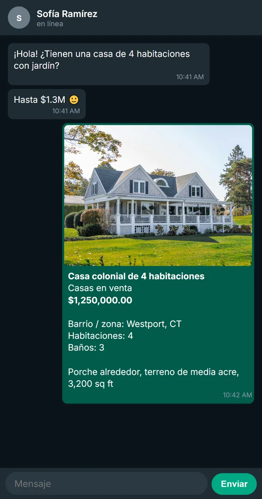

Agentes inmobiliarios: cómo enviar propiedades por WhatsApp en segundos
Un comprador ve un letrero o un anuncio en línea y te escribe: “¿Sigue disponible? ¿Cuánto cuesta?”. En ese momento, el agente que responde primero con fotos, precio y los detalles clave es quien agenda la visita. Este es un sistema sencillo para ser ese agente.
Los bienes raíces son uno de los negocios donde la rapidez y la presentación más pesan en un chat. El comprador casi nunca habla con un solo agente, y una propiedad es un producto visual: nadie se emociona con “3 recámaras, 2 baños, llámame para más detalles”. Lo que lleva a un comprador a agendar una visita es ver la propiedad y entender, de un vistazo, si le sirve.
El problema es que los agentes manejan decenas de propiedades, cada una con sus fotos, precio, dirección y características, repartidas entre portales, la galería del celular, el correo y chats viejos. Cada consulta se convierte en una búsqueda. Esta guía te muestra cómo convertir esa búsqueda en un solo toque.
Arma una “ficha” para cada propiedad
La ficha es un mensaje corto y estándar que puedes enviar para cualquier propiedad. Debe entenderse en cinco segundos en la pantalla de un celular:
Ficha de la propiedad
[Calle], [colonia/barrio]
[Precio de venta o renta]
[Recámaras] recámaras · [Baños] baños · [Superficie] m² o pies²
[Estacionamiento / jardín / alberca / característica destacada]
[Enlace al anuncio completo]
Envíala siempre con las mejores una a tres fotos: la fachada, la sala y el punto más fuerte (la cocina, la vista, el jardín). Las demás fotos van en el enlace del anuncio. En el chat, menos es más.
Organiza las propiedades como te las piden
Los compradores no preguntan por “la propiedad 4521”. Preguntan por “la de la calle Roble”, por “algo de menos de 500 mil con jardín” o por “el departamento que publicaste ayer”. Organiza tus fichas en carpetas que coincidan con esas preguntas:
- Por estado: disponible, apartada, próximamente.
- Por zona: colonia, barrio o ciudad.
- Por tipo: casa, departamento, renta, terreno, local.
Cuando una propiedad se venda o se rente, sácala de “disponible” el mismo día. Enviarle a un comprador una propiedad que ya está apartada es una de las formas más rápidas de perder su confianza.
La primera respuesta en 60 segundos
Cuando llegue una nueva consulta, intenta enviar tres cosas en más o menos un minuto:
- Un saludo con el nombre de la propiedad, para que sepa que leíste su mensaje.
- La ficha con las fotos.
- Una pregunta que haga avanzar la conversación, normalmente dos horarios para la visita.
Ejemplo
¡Hola, Valeria! Sí, la casa de la calle Arce sigue disponible. Aquí tienes las fotos y los detalles. Te la puedo mostrar el jueves a las 5:30 o el sábado a las 11. ¿Cuál te queda mejor?
Cuando responda, haz las preguntas para calificarlo: si tiene crédito o financiamiento aprobado, en qué plazo quiere comprar y si necesita vender otra propiedad antes. Hacer estas preguntas antes de mostrar la propiedad frena justo el momento en que el comprador está más interesado.
Ten siempre “propiedades parecidas” listas
Muchas veces la propiedad que pregunta el comprador no es la ideal, o ya no está disponible. Eso no termina la conversación: es tu oportunidad de mostrar tu valor como agente. Ten dos o tres alternativas listas para cada rango de precio y zona, para responder:
Ejemplo
Esa acaba de apartarse, pero tengo dos propiedades parecidas cerca, en el mismo rango de precio. ¿Quieres verlas?
Sigue la etapa de cada comprador
Un agente puede tener fácilmente decenas de conversaciones activas. Sin un hábito sencillo de seguimiento, el comprador que dijo “lo hablo con mi pareja” nunca vuelve a ser contactado. Usa una lista corta de etapas, por ejemplo:
- Nueva consulta
- Visita agendada
- Visitó
- Haciendo oferta
- Cerrado
Agrega una nota a cada comprador después de cada conversación (presupuesto, lo indispensable, lo que no acepta). La próxima vez que entre una propiedad que encaje, sabrás exactamente a quién escribirle primero.
Confirma las visitas por escrito
Un mensaje de confirmación con día, hora y dirección, más un recordatorio el día anterior, reduce las ausencias y se ve profesional. Guarda ambos como plantilla para enviarlos en segundos. Nuestras plantillas de mensajes de venta incluyen versiones listas.
Envía todo desde el teclado
La configuración más rápida es aquella en la que nunca sales de la conversación. KEYCON es una app para agentes inmobiliarios que funciona como el teclado del celular, con tus propiedades, respuestas guardadas y compradores dentro. Con el perfil de bienes raíces, el catálogo se llama “Propiedades” y cada una tiene campos como recámaras, baños, estacionamiento y superficie.
Cuando un comprador te escribe, abres la pestaña Productos del teclado, encuentras la propiedad y tocas Usar. La foto entra al chat con el precio y los detalles debajo. Funciona igual en WhatsApp, Instagram, Messenger, SMS y correo.

El teclado también tiene un CRM con la etapa y las notas de cada comprador, y una agenda para programar visitas sin cambiar de app.
Checklist para agentes
- Una ficha estándar para cada propiedad disponible.
- Las mejores una a tres fotos de cada propiedad, listas para enviar.
- Propiedades organizadas por estado, zona y tipo, actualizadas el día que cambian.
- Primera respuesta en 60 segundos, con fotos y dos horarios de visita.
- Dos o tres propiedades parecidas para cada rango de precio.
- Cada comprador con su etapa y una nota por conversación.
- Mensajes guardados de confirmación y recordatorio de visitas.